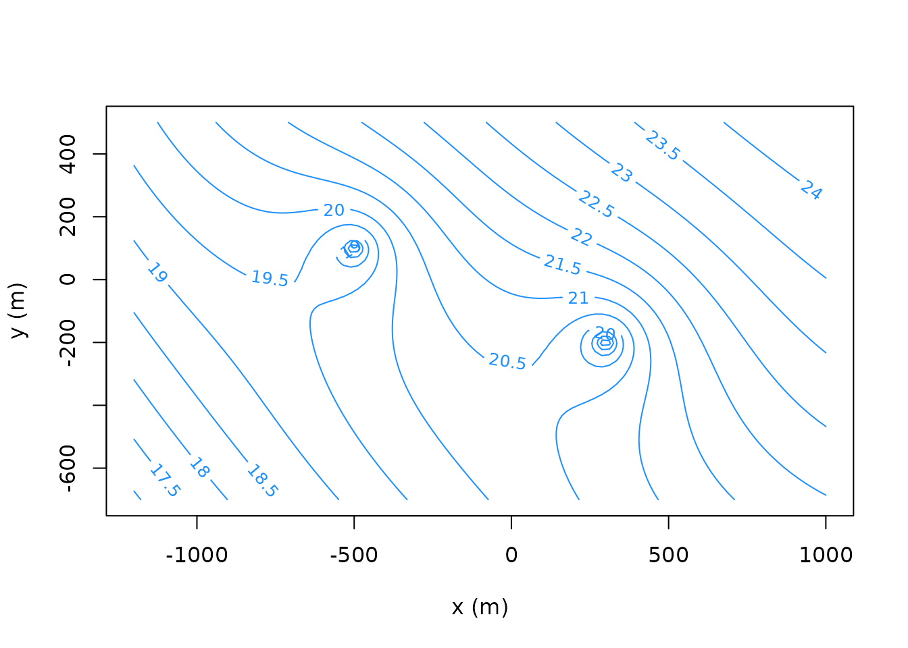
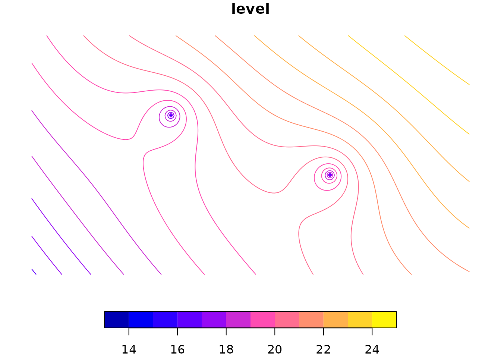
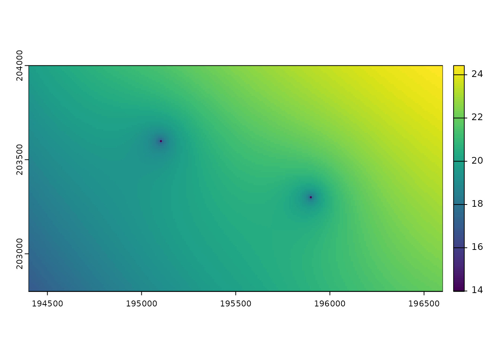

raem does not contain functions to export output to
spatial data formats such as vector data or rasters. Other R packages do
have this functionality however. This vignette describes a way to create
spatial data from raem output using other,
well-established, packages.
Create an example AEM model
As an example model, two extraction wells in a phreatic aquifer with uniform background flow and areal recharge are modeled. The output grid is defined and head contours are plotted.
library(raem)
# aquifer parameters
k = 10 # hydraulic conductivity, m/d
top = 30 # aquifer top elevation, m
base = 0 # aquifer bottom elevation, m
n = 0.2 # aquifer effective porosity, -
# create elements
w1 = well(x = -500, y = 100, Q = 1000)
w2 = well(x = 300, -200, Q = 1200)
as = areasink(x = 0, y = 0, R = 1500, N = 0.3 / 365)
uf = uniformflow(TR = k * (top - base), gradient = 0.002, angle = -135) # SW direction
rf = constant(x = 1000, y = 1000, h = 25)
# create and solve model
m = aem(k, top, base, n, w1, w2, as, uf, rf)
# output grid
xg = seq(-1200, 1000, length = 100)
yg = seq(-700, 500, length = 100)
# plot head contours
contours(m, xg, yg, col = 'dodgerblue', nlevels = 20, labcex = 0.8,
xlab = 'x (m)', ylab = 'y (m)')
Exporting as spatial vector data
The contours can be exported as a spatial vector format using the sf and isoband packages. sf
is widely used in the R community to handle spatial vector data.
isoband is a lightweight package containing fast contouring
algorithms used in i.a. ggplot2. A contouring grid of
the variable of interest is required. Optionally, the origin of the
raem model grid at
can be specified in a projected coordinate system so that the exported
contours are georeferenced. The set of contour lines is generated with
isoband::isolines() and converted to a sf
simple feature geometry collection, which can then be used as a simple
feature geometry column in a sf simple feature object.
library(sf)
library(isoband)
# create a 10 by 10 m contouring grid and get the heads as a grid
xg = seq(-1200, 1000, by = 10)
yg = seq(-700, 500, by = 10)
h = heads(m, xg, yg, as.grid = TRUE)
# optionally, set the x and y origin corresponding to (0, 0)
# in the requested coordinate system
xorigin = 195600
yorigin = 203500
epsg = 31370
# create the isolines with the specified levels
# the y-coordinates need to be reversed here for isolines()
lvls = seq(13.5, 24.5, by = 0.5)
isolines = isolines(xg + xorigin,
rev(yg) + yorigin,
h,
levels = lvls)
# convert to sfg object, create sfc column for sf object
isolines_sf = st_sf(level = as.numeric(names(isolines)),
geometry = st_sfc(iso_to_sfg(isolines)),
crs = epsg)
plot(isolines_sf)
To export the sf object to disk, the sf
package provides the write_sf() function:
# export as shapefile
write_sf(isolines_sf, 'isolines.shp')Exporting as spatial raster
To create and export output as a spatial raster object such as a GeoTIFF, the terra package can be used. This package is the replacement of the older, widely popular raster package. Similar to the creation of a spatial vector object, a grid of values for the variable of interest (here hydraulic head) needs to be specified. Optionally, the origin coordinates can be given to georeference the output. The extent of the raster needs to be specified explicitly from the range of the marginal grid vectors.
library(terra)
# set extent and create raster
extent = c(range(xg) + xorigin, range(yg) + yorigin)
r = rast(h, crs = paste('epsg', epsg, sep = ':'), extent = ext(extent))
# plot
plot(r)
To export the raster to disk, use the writeRaster()
function from the terra package:
writeRaster(r, 'heads.tiff', overwrite = TRUE)